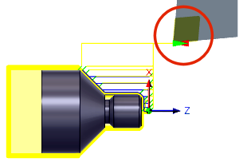

<div id="approachRetract_group"><p>操作開始時と操作終了時の工具の配置を定義するために使用されます。<br></p>
<p>既定の位置は、セットアップで定義されている回避高さを参照しています。</p>
<table class="tipTable" cellspacing="10">
<tr>
<td><center></center></td>
</tr><tr>
<td><center><p><b>回避高さの位置への<br>開始時と終了時の戻り</b></p></center></td>
</tr></table>
</div>